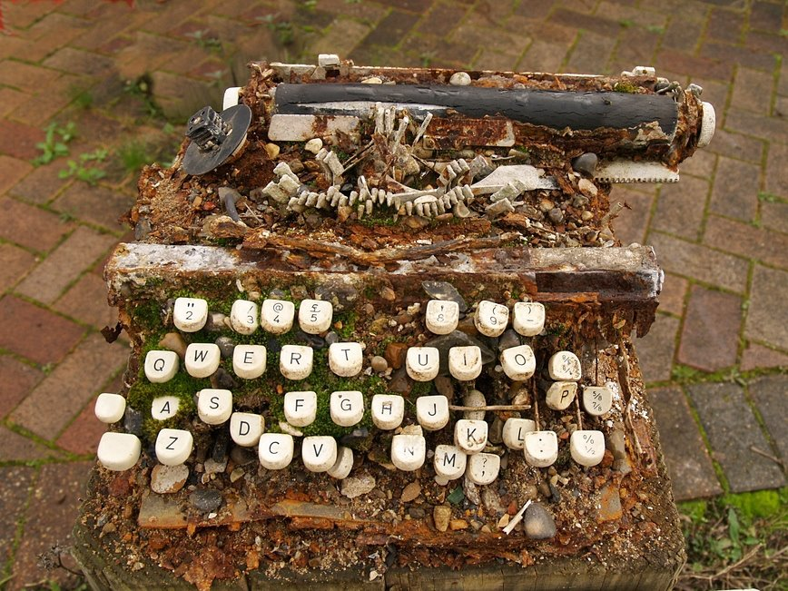

Sunday, February the 3rd, 2013
back to: title, date or indexes
Pebblehead's typewriter after the bestselling paperback potboilerist completed a particularly strenuous bout of key-thumping in his chalet o' prose.

(The picture found its way on to London's Lost Rivers, where I found it thanks to Marina Organ.)